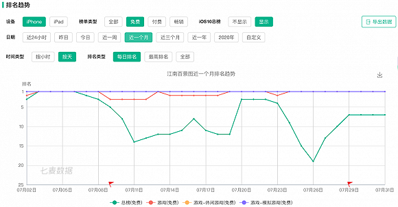

《江南百景图》是由椰岛游戏自主研发的古风模拟经营类手游，于2020年7月2日正式上线。玩家将梦回明朝江南地区，成为城市的设计师，描绘蓝图、兴造建筑、规划布局，经营赚钱。同时安排居民起居工作，写意世间百态，或带领大家奇遇探险。重绘明朝江南盛景，打造专属于玩家的江南百景图。
喜新厌旧果然是人类的本质。
几个月前还在动森里时刻关心大头菜物价波动的岛民们，近日又一窝蜂涌入《江南百景图》开始兴风作浪。但这股风浪还没有持续太久，就已经有玩家产生些许乏意。
作为一款古风模拟经营类手游，自7月2日正式上线以来，《江南百景图》便一直占据着iOS榜免费休闲模拟游戏第一名，iOS总榜排名频频进入前十，相关微博热搜同样稳坐前排，游戏超话排名的热度也居高不下。

接连霸榜的成绩着实亮眼，清新的古风界面、简单易上手的玩法、提升期待值的抽卡机制……《江南百景图》的确有成为国民爆款手游的潜力。但从目前反馈来看，“费肝弃坑”也成为不少玩家卸载该游戏的原因。
一方面是居高不下的热度关注，另一方面是逐渐流失的玩家用户，2020下半年手游市场第一个爆款《江南百景图》是会朝着国民破圈冲刺？还是高开低走后续乏力？